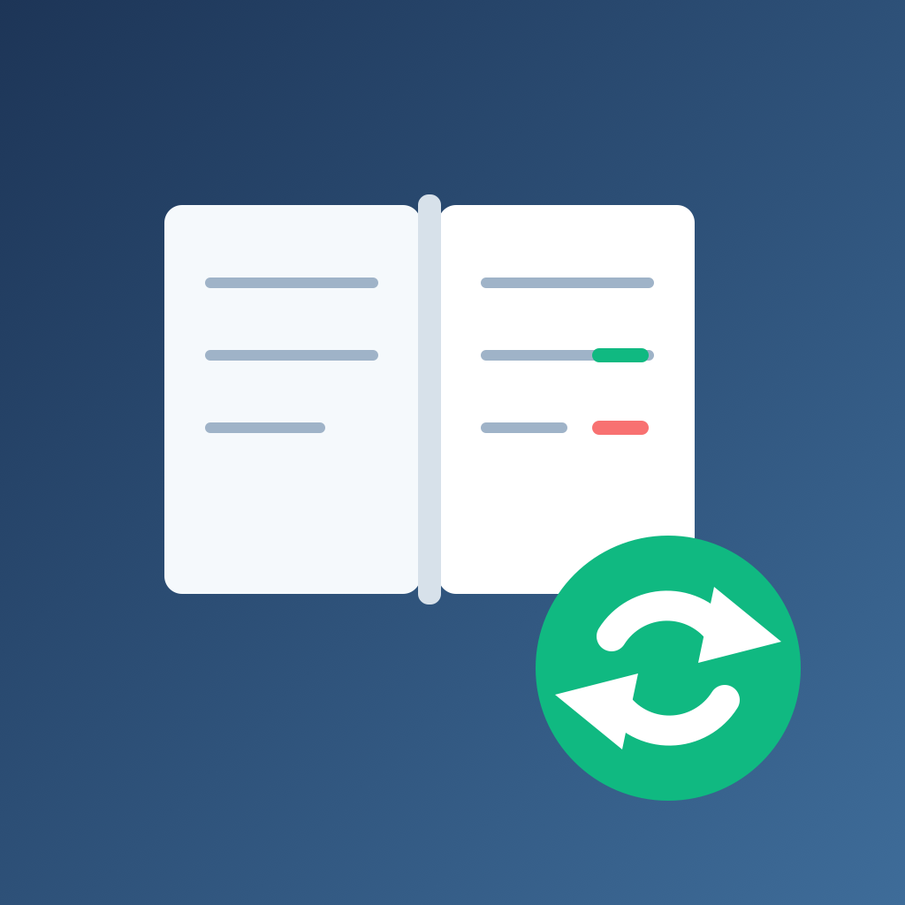

檢查重點：①24px 極小尺寸是否仍可辨識 ②淺色/深色底（Dock／主畫面）對比 ③與競品圖示的區別度。挑選後由助理細修並跑 flutter_launcher_icons 產生四平台＋PWA 圖示。

A-ledger-sync.svg／B-monogram-orbit.svg／C-receipt-check.svg（同目錄；SVG 可無損調整配色與比例）。
選定或給調整意見後：細修 → 1024×1024 不透明 PNG → flutter_launcher_icons 產生 iOS/Android/macOS/Windows/PWA 圖示 → techstack truth 回寫＋README §9 商標授權登記。